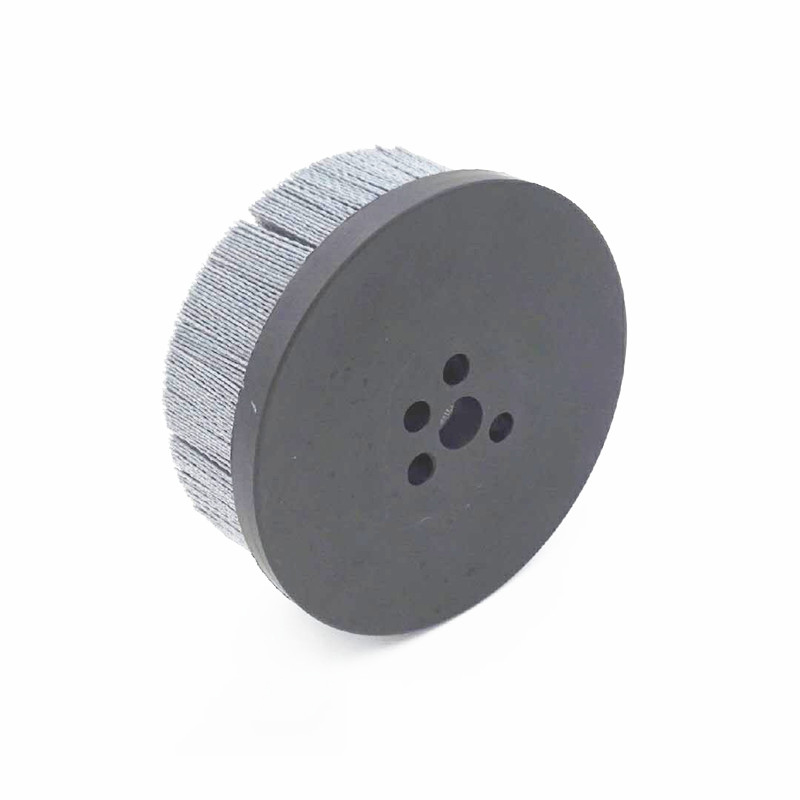

Build to the contact area
Flat, profiled or compact constructions can be reviewed against the actual surface, fixture and access direction.
Home / Bonded industrial brushes
BONDED & CUSTOM BRUSHES
For guided cleaning, deburring or fixture integration, a bonded brush is designed around the base profile, filament pack, contact area and mounting details of the process.
Request a technical review
Flat, profiled or compact constructions can be reviewed against the actual surface, fixture and access direction.
Base material, profile, mounting holes and other interfaces need to fit the designed assembly rather than a generic catalogue form.
Filament type, density and trim influence flexibility, contact distribution and the suitability for the intended cleaning or finishing task.
DRAWING-LED DEVELOPMENT
A starting drawing is useful but not required. Photos, envelope dimensions, mounting constraints and the expected surface result help convert an application into a reviewable brush build.
| Brush profile | Flat, shaped, compact or fixture-specific contact geometry |
|---|---|
| Base & interface | Base profile, mounting holes, hub or machine/fixture connection |
| Filament pack | Material, density, trim and contact requirements |
| Workpiece | Material, surface shape, contamination or edge condition |
| Validation point | Reference sample, drawing, photos and expected process result |
Include the working envelope, mounting information and the surface result you need. We can start with the engineering brief.